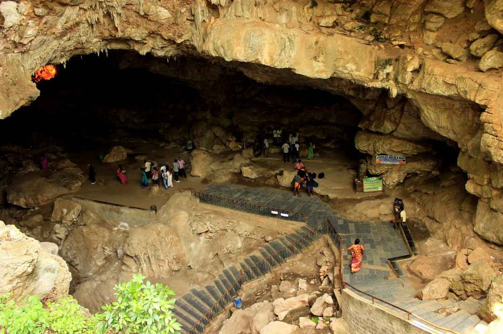
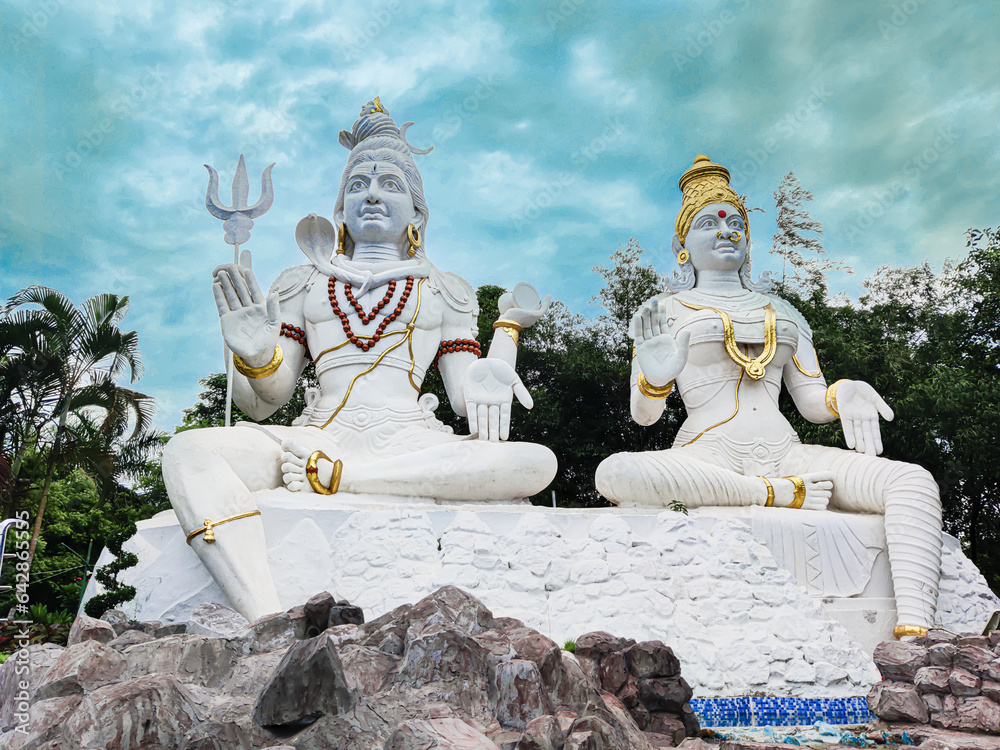

Famous Tourism Spots
List
- Borra Caves
- Kailasagiri
- Araku Valley
Borra Caves

If you're a history lover, the Borra Caves are one of the best tourist attractions...
Kailasagiri

Kailasagiri is a picturesque hill overlooking the sea...
Araku Valley
 Araku is famous for its coffee plantations...
Araku is famous for its coffee plantations...